01. Datos Cuantitativos Discretos
Contexto del problema: Una empresa de energías renovables evalúa el número de paneles solares de alto rendimiento instalados por vivienda en un fraccionamiento sustentable de 100 casas. Se busca determinar la capacidad instalada promedio.
Registro de los 100 Datos Ordenados (N=100)
Tabla de Frecuencias
| Clase (Paneles) | Frec. Absoluta (fa) | Frec. Relativa (fr) | Frec. Acumulada (facum) |
|---|---|---|---|
| 1 Panel | 15 | 15% | 15% |
| 2 Paneles | 30 | 30% | 45% |
| 3 Paneles | 35 | 35% | 80% |
| 4 Paneles | 15 | 15% | 95% |
| 5 Paneles | 5 | 5% | 100% |
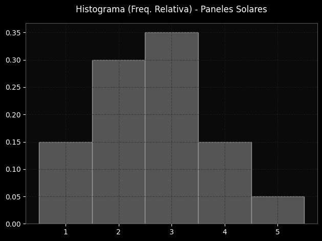
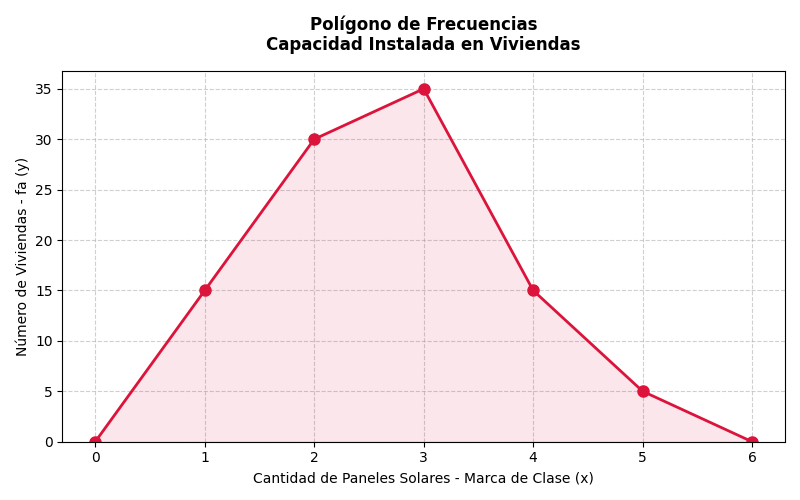
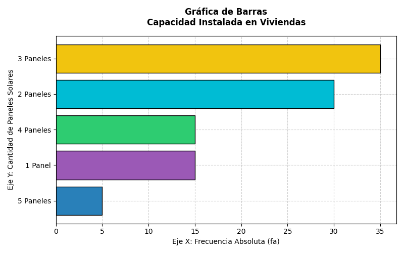
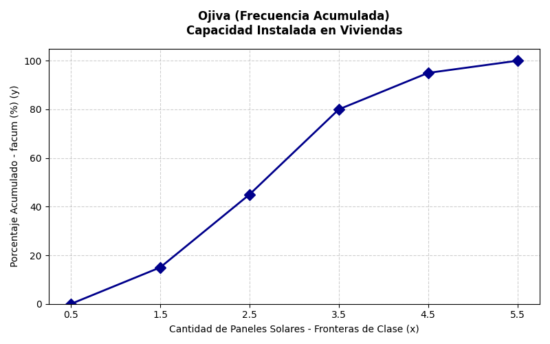
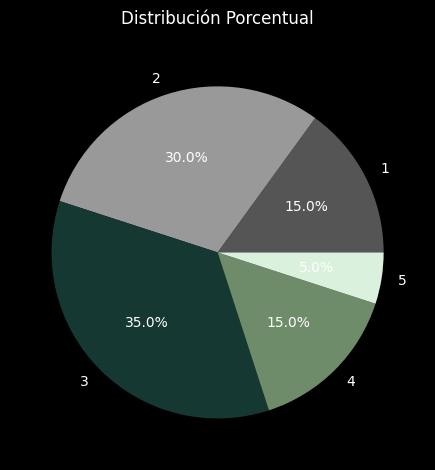
02. Datos Cuantitativos Continuos (8 Clases)
Contexto del problema: En la industria de semiconductores, se midió el tiempo exacto (en milisegundos) que tarda un brazo robótico en soldar un microchip en 100 placas madre diferentes. Esto ayuda a detectar cuellos de botella en la producción.
Registro de los 100 Datos Ordenados (N=100)
Tabla de Frecuencias Agrupadas
| Clase | Lím. Inf. | Lím. Sup. | marca de clase | fa | fr | facum |
|---|---|---|---|---|---|---|
| Clase 1 | 10.0 | 16.0 | 13.0 | 8 | 8% | 8% |
| Clase 2 | 16.0 | 22.0 | 19.0 | 12 | 12% | 20% |
| Clase 3 | 22.0 | 28.0 | 25.0 | 18 | 18% | 38% |
| Clase 4 | 28.0 | 34.0 | 31.0 | 25 | 25% | 63% |
| Clase 5 | 34.0 | 40.0 | 37.0 | 17 | 17% | 80% |
| Clase 6 | 40.0 | 46.0 | 43.0 | 10 | 10% | 90% |
| Clase 7 | 46.0 | 52.0 | 49.0 | 6 | 6% | 96% |
| Clase 8 | 52.0 | 58.0 | 55.0 | 4 | 4% | 100% |
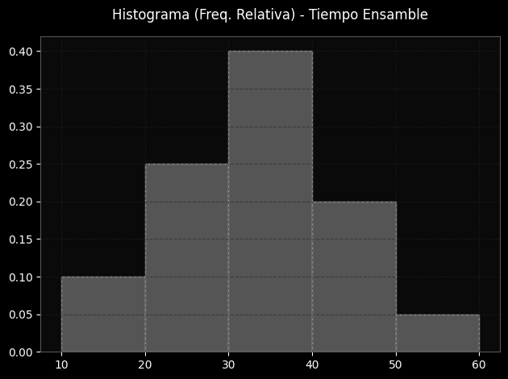
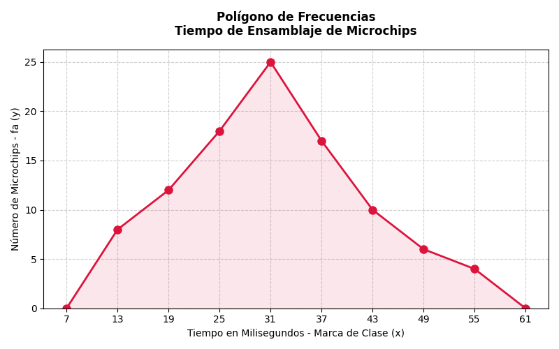
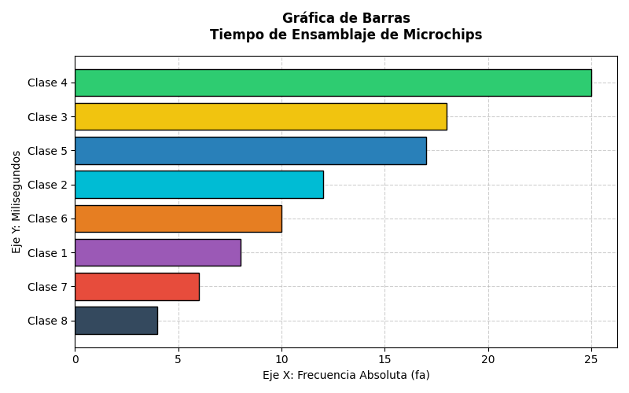
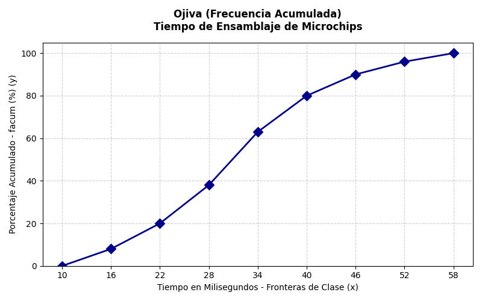
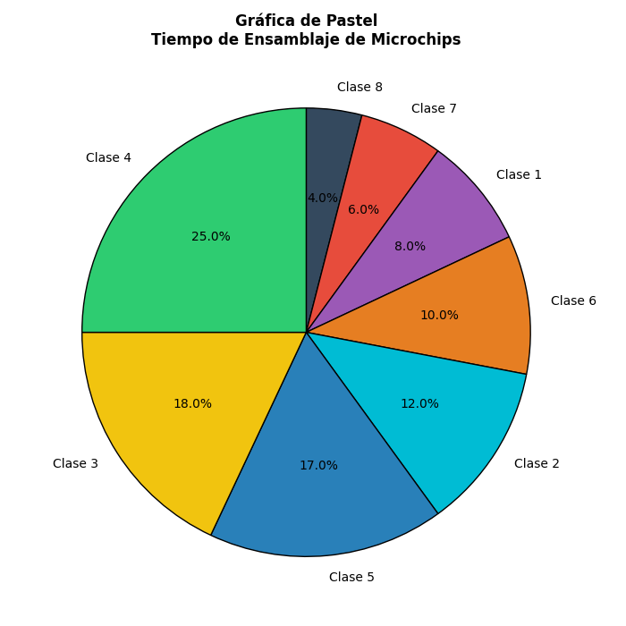
03. Datos Cualitativos
Contexto del problema: Tras lanzar una actualización mayor a una aplicación móvil ecológica, se encuestó a 100 usuarios sobre su nivel de satisfacción general con la nueva interfaz de usuario para futuras mejoras.
Registro de los 100 Datos Ordenados (N=100)
Tabla Categórica
| Categoría | fa | fr | facum |
|---|---|---|---|
| Excelente | 10 | 10% | 10% |
| Muy Bueno | 30 | 30% | 40% |
| Bueno | 40 | 40% | 80% |
| Regular | 15 | 15% | 95% |
| Malo | 5 | 5% | 100% |
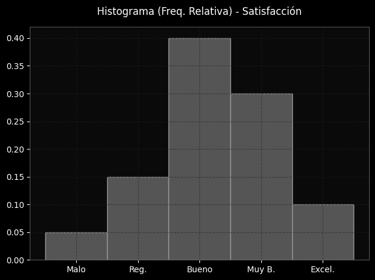
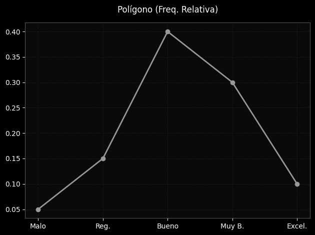
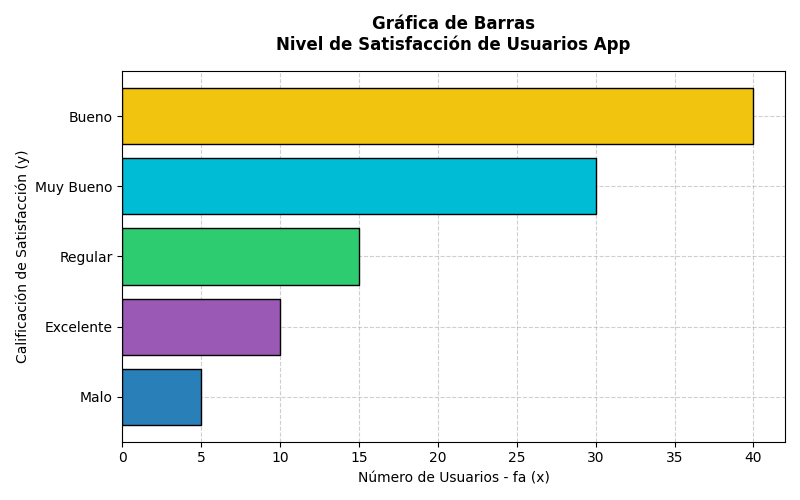

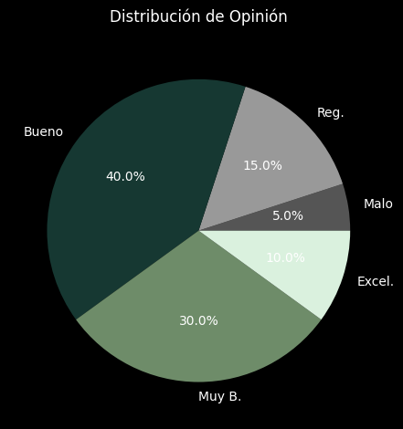